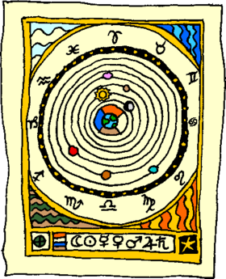
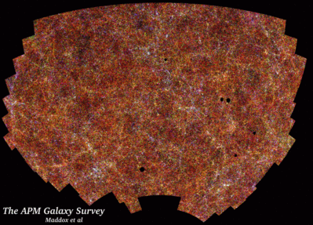
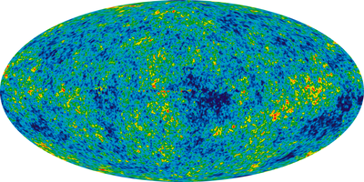
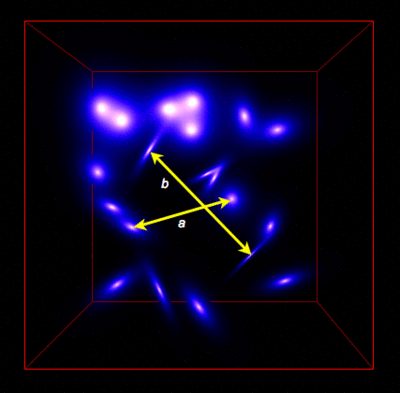
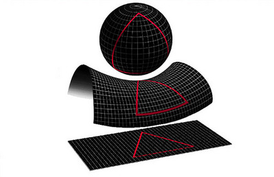

Cosmology is the study of the nature of the universe as a whole entity. The word cosmology is derived from the Greek kosmos meaning harmony or order. Cosmologists are interested in the formation, evolution and future of the universe and its constituents.
Most objects we can see with telescopes are large or exist at extreme distances (e.g. planets, stars, galaxies, clusters of galaxies and even superclusters). The majority view of cosmologists is that all these objects were formed after an initial, extremely hot and dense formation event, about 14 Gigayears ago, that has created (and continues to create) the space we see around us. This event is called the Big Bang.
Whilst the hot Big Bang model does seem to explain much of what we observe around us, there are still many fundamental questions that exist. What is the majority of the matter in the universe made of? How common are planets around stars? What causes some galaxies to be elliptical, spiral or irregular in shape? What is the geometry of the universe? What is the mysterious dark energy? Is there a cosmological constant? Is it a variable? Do other universes exist?
As well as the properties of the largest objects (e.g. galaxies and large scale structure), cosmology is becoming increasingly concerned with the properties of the smallest objects.
To help determine what happened at the beginning of the universe, cosmologists need the help of particle physicists. The Big Bang model describes a very hot and dense beginning to the universe in which many interesting particle physics phenomena occur. These phenomena have influenced the type of universe we live in.
In the earliest stages the universe was tremendously hot and matter could not exist. The universe was radiation dominated. As the universe expanded and cooled elementary particles could be created, which later formed the lightest elements such as hydrogen, helium and lithium. Heavier elements had to wait for stars to form so that they could be made via nucleosynthesis in the high temperature, pressure and density centres of massive stars.
The Standard Model of particle physics is a mathematical description of the 12 fundamental particles (6 leptons and 6 quarks) and 3 forces (electromagnetic, weak and strong). It is thought that at ~10-11 seconds after the Big Bang all 4 (current epoch) forces (the three mentioned above plus gravity) became separate forces. However at around ~10-43 seconds after the Big Bang (the Planck Time) all 4 forces were unified into one single force. The process of the forces separating from each other is called spontaneous symmetry breaking.
The first cosmologists were Babylonians and Egyptians who observed the sky and who could predict the apparent motions of the Sun, moon, brightest stars and the planets.
In the 4th century BC, Greek philosophers deduced that the stars were fixed on a celestial sphere which rotated about the spherical Earth. The planets, Sun and the Moon moved in a fluid substance called ether between the Earth and the stars.

Credit: Swinburne
In the 2nd century AD Ptolemy based his work on the belief that all motion was circular. To account for the motion of some of the planets, which seem to loop back upon themselves, Ptolemy introduced epicycles so that the planets moved in circles upon circles.
New observations drive advances in theory, and new theories can spur new observations. However many centuries passed until a significant new development in cosmology occured.
In the 16th century Nicholas Copernicus proposed a heliocentric system in which the Earth rotated on its axis, and along with the other planets, orbited the Sun. But the observational evidence of the time favoured the epicycle-based Ptolemaic system. The Copernican system was promoted by some but it was the discovery of the aberration of starlight in 1728 that proved without doubt that the Earth orbits the Sun!
In the early 17th century Galileo Galilei discovered moons orbiting the planet Jupiter. It clearly showed that Earth was not special and made many believe in the Copernican heliocentric model of planets orbiting the Sun. Isaac Newton then discovered the inverse-square law for the gravitational force which could explain the elliptical orbits of planets and comets in the Solar System. A physical framework for celestial motions had been found.
If the Earth orbited the Sun then positions of nearby stars, compared to the background, should change. However, initial observations did not detect any such motion. The absence of any observable shift or parallax in the positions of the stars as the Earth orbited the Sun implied that stars must be at great distances from the Sun. Newton concluded that the universe must be an infinite and eternal sea of stars, each much like our own Sun.
In the 18th century two notable philosophers emerged with similar ideas. In 1750 Thomas Wright suggested that the Milky Way, the Galaxy, was a vast spinning disk consisting of stars and planets. Immanuel Kant wrote the “General Natural History and Theory of the Heavens” in 1755 in which he suggested that the spiral nebulae, faint nebulous objects observed across the sky, were external galaxies or island universes independent of the Milky Way.
Physical cosmology, the quantitative version of cosmology, began with Albert Einstein in 1915 when he developed the first substantial models of the universe via the solutions to his General Theory of Relativity. These solutions were added to and improved upon by Alexander Freidmann, Willem de Sitter, Georges Lemaitre, H. P. Robertson and Arthur Geoffrey Walker. At that stage astronomers were not aware of the expansion of the universe, and Einstein had introduced a mathematical term, a cosmological constant, to ensure his universe was static.

Credit: Steve Maddox, Will Sutherland, George Efstathiou and Jon Loveday
In 1912 Henrietta Leavitt discovered Cepheid variable stars in the Magellanic Clouds and confirmed that the variables with longer periods had larger luminosities. From 1912 onwards Vesto Slipher at Lowell Observatory began to accumulate velocities of spiral nebulae. By the mid-1920s the vast majority of these nebulae had velocities of recession, some in the thousands of km/s. It was difficult not to assign such extreme velocities to external galaxies.
By the mid 1920s J. C. Duncan and Edwin Hubble had also detected Cepheid variable stars in Messier 33, Messier 31 and NGC 6822. These stars obeyed a Period-Luminosity relationship in which the period of their variability was related to their intrinsic brightness. Once a calibration of nearby Cepheids with known distances had been established a distance to each variable could be assigned based solely on it’s period of variability. Based on these variable stars the inferred distances were far too great to allow these spiral nebulae to be part of our Galaxy. They were galaxies in their own right. Wright and Kant were correct.
In 1929 Hubble published a landmark paper that described a relation between the distance to a galaxy and its observed radial velocity. More distant galaxies have larger recessional velocities (as had been seen with a smaller sample by Vesto Slipher). A case can be made that Lundmark and Lemaitre had beaten Hubble to this discovery. As well, H.P. Robertson was the first to describe the results as cosmic expansion. Einstein then threw away his cosmological constant. The universe was not static, but expanding.
In the 1950s Hermann Bondi, Thomas Gold and Fred Hoyle put forward the Steady State model of the universe. In this model, matter was made from the vacuum of space and the universe looked the same in any direction and at any time. Philosophically elegant, it avoided a start and finish to the universe. It was, however, testable. The observed evolution of radio sources, and later the observed peak in number density of quasars, several billion light years distant, called the Steady State model into question. In the early 1960s Arno Penzias and Robert Wilson detected a very faint signal in the microwave region corresponding to all-sky radiation at ~3 degrees K that peaks in intensity at a wavelength of 2 mm. Robert Dicke and collaborators had predicted such a signal, the Cosmic Background, if the universe had begun in a hot, dense state.

The 3 degrees K radiation that we now detect was emitted about 300,000 years after the Big Bang when the universe had cooled enough for plasma to form a gas of neutral atoms. After that the photons of the cosmic background radiation have traveled on straight lines (to us) without interacting with matter ever since. Further observations showed that the radiation was of the expected blackbody form for a very hot origin and the hot Big Bang model was re-kindled as the preferred cosmological model. Along with the Cosmic Background, two other observations underpin the Big Bang model. One is that nucleosynthesis in an early hot universe correctly accounts for the cosmic abundance of the light nuclear isotopes such as hydrogen, deuterium, helium-3, helium-4, and lithium-7. The second was the observed expansion of the universe as implied by the motions of distant galaxies.

However, the Big Bang model could not explain certain observations of the universe. If we divide space into cubes of several hundred million light-years, each such cube would look similar in terms of mass density, galaxy density and the amount of coherent structure. This large-scale uniformity is observed in distant galaxy surveys. However, in the standard Big Bang model the universe evolves so quickly that there is no time for such similarity to be established. This problem is known as the horizon problem where horizon is used to indicate the largest distance that information or energy could have traversed since the instant of the Big Bang, given the restriction of the constancy of the speed of light. Simply put, the universe is nearly homogenous and isotropic on very large scales.
The second problem is the flatness problem. The mass density of the universe governs its evolution and fate. If the mass density exceeds a critical density, then gravity will be strong enough to reverse the current expansion and the universe has a geometry which is called closed. If the mass density is less than the critical value, the universe will go on expanding forever, and the universe has an open geometry. The ratio of the actual mass density to the critical value is known as Omega. The General Theory of Relativity implies that the geometry of the universe is Euclidean only if Omega is exactly 1.0, so an Omega = 1 universe is called flat. At present time we believe the value of Omega to be well within a factor of 10 of 1.0. For the value of Omega to be this near to 1.0 at this epoch is remarkable – if it was initially only a very, small amount away from 1.0, some 14 billion years of evolution would have driven it well away from this value at this current epoch. To all purposes the universe appears flat.

Credit: NASA/GSFC Imagine the Universe
To explain these observed ‘problems’, in 1980 Alan Guth determined that a period of extremely rapid exponential expansion, ‘inflation’, occurred around 10-34 seconds after the Big Bang. Immediately after this inflationary period, the universe currently visible to us had a radius of ~1 m. The universe then returned to its normal (linear) mode of expansion. Subsequent fine tuning of inflation has been done by Andrei Linde, Andreas Albrecht and Paul Steinhardt, and current versions include multi-universes all undergoing some type of inflation (e.g. chaotic, eternal). Inflation may be linked with string theory and brane cosmology in which our 4 dimensional (3 spatial, one time dimension) brane can be considered as a subset of a much higher dimension bulk.
The very early universe inflation period, and it’s physical causes, may be related to a recent observation of the universe. Distant high redshift supernovae appear to be slightly less luminous than expected, which can be interpreted as a universe that is undergoing a phase of accelerated expansion. Dark energy has been postulated as a sort of anti-gravity which drives this acceleration.
Current topical areas in cosmological research include the nature of dark matter and dark energy, the search for the first stars and galaxies, properties of the cosmic background, and numerical simulations of large scale structure.